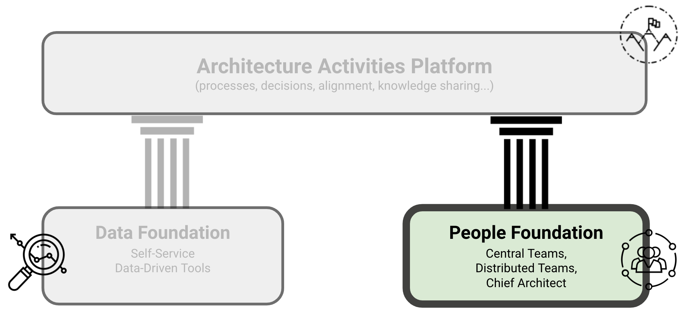
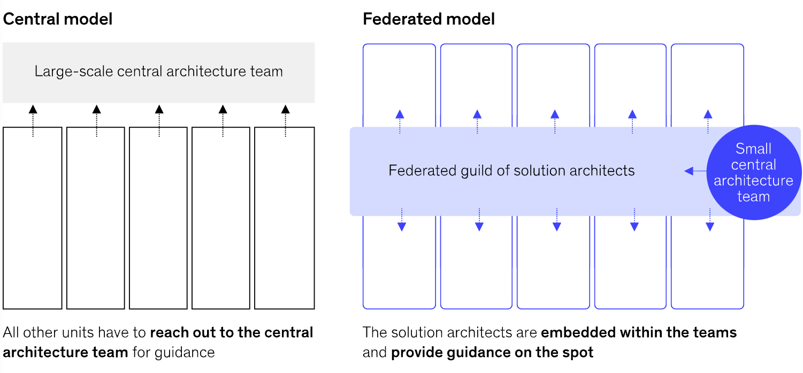

People Pillar
KEY POINTS:
- Architects are bridging local business, product, organizational, and technology issues.
- We should not take our architectural talent for granted. Architects are difficult to hire talent as they need in-depth technical knowledge and domain-specific and organizational knowledge.
- We need to make sure to support, organize, and leverage architecture talent.
One of the central premises of our work is that we should not take our architectural talent for granted. Architects are
bridging local business, product, organizational, and technology issues. Architects are difficult to hire talent as they
need not only in-depth technical knowledge but also domain-specific and organizational knowledge.
The People Pillar is an essential element of Grounded Architecture. As noted by Gregor Hohpe, to transform an organization, you do not need to solve mathematical equations. You need to move people. Consequently, having a strong network of people doing architecture across the organization is crucial to ensure that the architecture function has any tangible impact. 
In my work in the past few years, I was working by combining, in different forms, two teams of architects: a small central architecture team and a cross-organizational distributed virtual team. A central architecture team is an enabler for the rest of the organization, supporting teams and addressing global strategic topics. A distributed virtual architecture team consists of architects (or other people making architecture decisions in their teams) working in local organizational units but spending some time in a virtual team with peers from other teams. Such a distributed virtual architecture team is a crucial element of an architecture function. It provides the connection (grounding) across all parts and levels of the organization, increasing transparency, building people networks, and making it easier to implement change.
Background: Central and/or Federated Architecture Function
The architecture function generally follows one of two fundamental models: central or federated. (McKinsey 2022).

The central model involves a large-scale central architecture team. The central team typically defines the process for approval of new work and assures adherence by development teams. In this model, development teams have few or no qualified solution architects that are typically a part of the central architecture team. This model also holds centralized infrastructure, operations, and security teams apart from the development function. Control and governance are typically the primary concerns of the central architecture team.
The federated model generally relies upon a guild or “community of practice” of solution architects embedded into individual development teams. A small central architecture team or an architecture center of excellence (CoE) may complement such a guild. The federated model’s architects facilitate high-level planning and act as on-demand service providers for distributed teams.
The federated model is more commonly associated with cross-functional DevOps culture. The roles of solution and enterprise architects are generally broader in scope to integrate infrastructure, operations, and security concerns in product-oriented teams. The architect’s role focuses on facilitation and enablement rather than control.
Today, modern agile organizations mainly adopt the federated model. This approach increases the likelihood that the central architecture team will spend time closely involved with the challenges identified in the teams. The model ensures that the architects will be evaluated against the goals of the individual products they support, thereby focusing on improving performance and reducing complexity.
The Hybrid Model
To operate in a complex context, you need to invested effort to ensure we have the right people at the right places. In the end, I usually found it best to adopted model of a hybrid organization combining elements of central and federated orientation structures:
- A Small Scale Central Architectural Teams, and
- Architecture Guilds & Virtual Architectural Teams.
The hybrid team structure supports well our goals of executing at scale. Guilds and virtual architecture teams support execution by increasing the number of people involved in architectural activities and increasing work efficiency through better alignment. By having members representing various organizational units, we are able to have much more impact across the board. And having some capacity on the central level serves as a catalyst helping people at local levels to do their job while being aligned and better connected with overall strategic goals and other teams working on similar topics.
Central Architecture Team
The roles of people in central teams may differ depending on the organization. In addition to doing typical architecture work, I found it helpful to be able to have people that can cover the following types of responsibilities:
- Build and maintain the architecture Data Pillar. Building a data pillar will not happen by accident. It requires clear ownership, curation, and technical support.
- Promote data-informed decision-making. identify, collect, and use relevant data. Only some people are used to applying data in their decision-making. Architects should provide support and be a role-model for data-informed organizations.
- Proactively identify, connect, and maintain relationships with all relevant stakeholders. Architects are frequently uniquely positioned to bridge different organizational units and stakeholders.
- Build internal architecture communities and guilds. Organizing rituals and people requires active effort.
While guilds and virtual teams could do many of the listed activities, the voluntary nature of guilds and virtual groups makes such support more fragile. The central architecture team can take full long-term ownership of some topics and be a backup if community support weakens, ensuring long-term continuity.
Architecture Guilds & Virtual Architecture Teams
“A lot of cheap seats in the arena are filled with people who never venture onto the floor. They just hurl mean-spirited criticisms and put-downs from a safe distance. … we need to be selective about the feedback we let into our lives. For me, if you’re not in the arena getting your ass kicked, I’m not interested in your feedback.” — Brené Brown, Rising Strong
I always found it essential to connect organization members passionate about architecture in some form, a guild, a community of interest, or a virtual team.
Guild or virtual teams are composed of people that work full-time as architects or tech leads in specific organizational units but spend part-time collaborating with architects from other departments to reach more alignment, share knowledge, and leverage each other’s work. In this peer-to-peer community, architects are collectively responsible for identifying and growing architectural talent, mentoring, and helping each other.
When having many guilds and teams, we have organized architects in several sub-areas:
- General teams for a broader set of architectural topics.
- Specialist teams focus on a particular part of the technology stack. Examples include native mobile apps, web frontends, public cloud infrastructure, etc.
- Strategic initiatives teams. For instance, data strategy, public cloud strategy, transactions, or verticalization.
Having places and events to connect central and distributed teams is essential. Such events can transform individual experiences into collective knowledge that can benefit the whole organization. In most organizations I worked in, distributed teams followed a similar pattern of rituals:
- Regular (e.g., bi-weekly) forums, with updates, announcements of architectural spikes, and sharing or architectural decisions (similar to Andrew Harmel-Law’s Advice Process)
- Annual or bi-annual summit, with several days of intensive knowledge sharing and workshops
- Ad-hoc workshops focusing on some explicit topic
While the central team can provide some essential support, all communities must take the initiative and engage as many people as possible during these events. People should be active participants rather than passive receivers of information to ensure more involvement and commitment.
Embracing Diverse Team Structures
When building architecture guilds and virtual architecture teams, it is essential to acknowledge that organizational units have very diverse structures and sizes. There is no one-fit-all solution about how departments should assign architecture responsibilities. I generally worked on three types of team-architect systems per Gregor Hohpe’s view of architects and their teams’ relationships (Figure 1). That means that some units have lead architects coordinating or leading multiple teams. We often have cases where an architect was a full-time member of a team working on specific products or other features. I also worked with teams that needed an architect but several senior developers making architectural decisions.
 Figure 1: A model for organizing (local) architects.
Credit: Gregor Hohpe.
Figure 1: A model for organizing (local) architects.
Credit: Gregor Hohpe.
In big organization, embracing diversity is a pre-requirements to have any broad impact.
Building People Pillar
While each organization will need its unique approach, here are some tips I found helpful in my approach to forming architecture teams or “People Pillar”:
- Before making grandiose plans for reorganizations, connect with the people already doing architectural work in an organization, creating a community of practices or a virtual team. Being inclusive and connecting all key tech leaders, regardless of their actual position and title, is vital. Being well-connected to these people will be crucial in any architecture organization, so you will always benefit from this effort.
- If creating a virtual team is a part of your architecture strategy, move away from making an informal community of practice towards building a team with more accountability and responsibility. It was helpful to get buy-in from key stakeholders, e.g., Engineering Leaders who should want to get their people to work together with other architects.
- Connect with as many non-architecture stakeholders as possible in the early stages. Again, being well-connected to these stakeholders will be crucial in any architecture organization.
- Align the architecture vision with all stakeholders.
- Avoid hiring digital hitman. Invest in growing internal talent. Architects require technology, domain, and organization knowledge. Finding such a person outside the organization is challenging.
- Externalize. Reach out and connect. Participate in external events. Publish. Being strong externally can help you to both grow and attract architectural talent.
Structure ← Data Pillar |
Structure Architecture Activities Platform → |